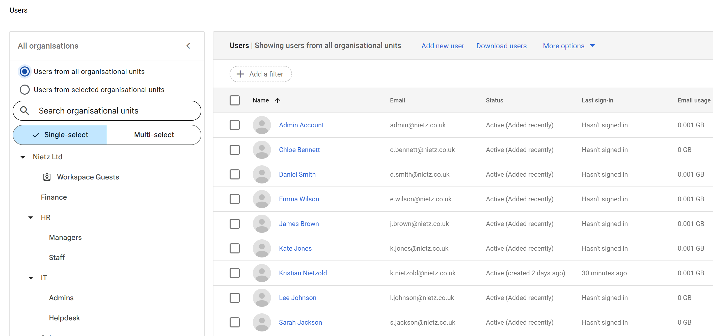
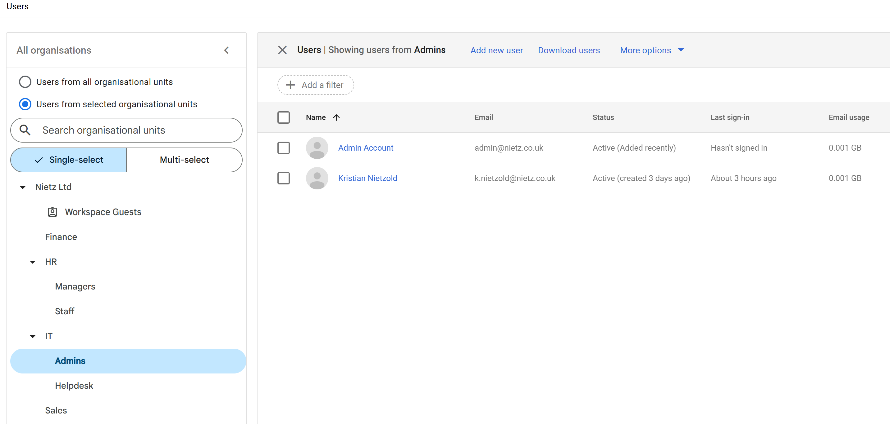
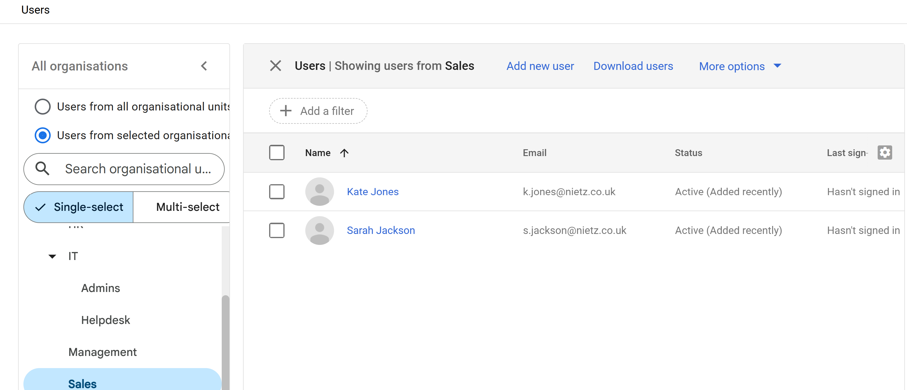

Google Workspace 03: User Management
User creation, department placement and account administration.
03. User Management
Created and organised Google Workspace user accounts by department, with evidence of account administration and placement.
Users were assigned to organisational units (OUs) based on department and role to enable structured access control and policy enforcement.
User Structure
Users were distributed across departments to support the organisation's access and policy model.
| Name | Email | Organisational Unit |
|-------------------|-------------------------|---------------------|
| Admin Account | admin@nietz.co.uk | IT/Admins |
| Kristian Nietzold | k.nietzold@nietz.co.uk | IT/Admins |
| Chloe Bennett | c.bennett@nietz.co.uk | IT/Helpdesk |
| Daniel Smith | d.smith@nietz.co.uk | IT/Helpdesk |
| Emma Wilson | e.wilson@nietz.co.uk | HR |
| Lee Johnson | l.johnson@nietz.co.uk | Finance |
| Kate Jones | k.jones@nietz.co.uk | Sales |
| Sarah Jackson | s.jackson@nietz.co.uk | Sales |
| James Brown | j.brown@nietz.co.uk | Management |
All Users Overview (Full Organisation)

This view provides a complete overview of all users across the organisation, including all departments and organisational units.
Administrative Users (Privileged Accounts)

Administrative users were placed in a dedicated OU to isolate privileged accounts and reduce security risk.
This allows stricter policies and monitoring to be applied specifically to high-privilege users.
Helpdesk Users (Delegated Administration)

Helpdesk users were grouped into a dedicated OU to support delegated administration.
These users can be assigned limited admin roles without granting full administrative access.
Business Users (Department Example)

The All Users view provides full coverage of departments such as HR, Finance, and Management.
The Sales OU is shown here as a representative example of how standard users are grouped within departments.
Design Approach
This configuration ensures:
Role-based access control (RBAC)
Separation of privileged and standard users
Delegated administration via Helpdesk OU
Consistent naming conventions
Scalable user management aligned to organisational structure
Summary
Evidence covered:
Creation of user accounts within Google Workspace
Assignment of users to organisational units
Implementation of role-based structure
Separation of administrative and standard users
Preparation for policy enforcement and access control
This provides a structured foundation for further configuration across the environment.